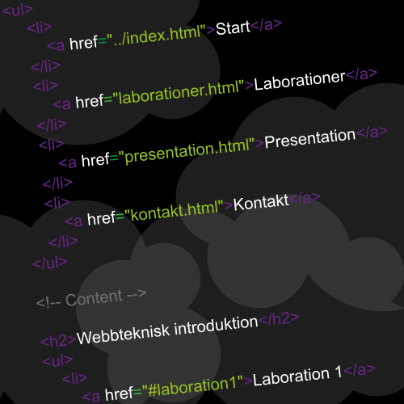

Lisa Westlunds laborationsuppgifter
Kursblogg
Övar på video-taggen
I uppgift 1.7 övar jag på att lägga in video.
(c) copyright 2008, Blender Foundation / www.bigbuckbunny.org
Skrivet av Lisa, 2014-09-17
Använder bilder
I uppgift 1.6 övar jag på att lägga in bilder i mina html-dokument. Nedan visas en bild skapad som en svg-fil.
Skrivet av Lisa, 2014-09-09
Ett första inlägg
På den här webbplatsen kommer jag presentera de laborationsuppgifter jag arbetar med i kursen Webbteknisk Introduktion.
För tillfället arbetar jag med att bygga upp webbplatsen.
Skrivet av Lisa, 2014-09-06